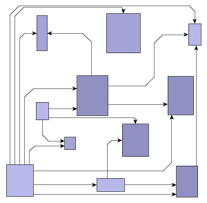
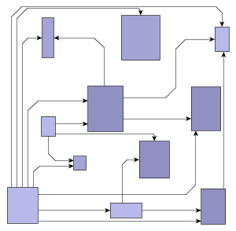
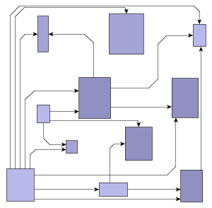

Fig 1: The same graph with orthogonal (left) and polylinear (right) edge routing.
|
Search this API | ||||||||
| PREV PACKAGE NEXT PACKAGE | FRAMES NO FRAMES | ||||||||
See:
Description
| Interface Summary | |
|---|---|
| DynamicDecomposition | This interface should be implemented by classes that dispatch notifications about changes in partitions. |
| DynamicDecomposition.Listener | Interface for classes that want to be notified about changes in partitions. |
| EnterIntervalCalculator | Interface providing additional intervals to traverse from one PartitionCell into an adjacent one. |
| GraphPartitionExtension | Implementations are extending the functionality of a GraphPartition. |
| ObstaclePartition | A Partition that takes a list of Obstacles as input to subdivide an area into PartitionCells. |
| Partition | Divides a rectangular area into one or more PartitionCells. |
| PartitionCellKeys | This interface defines keys to obtain additional information about a PartitionCell. |
| Class Summary | |
|---|---|
| AbstractSegmentInfo | Stores location information for orthogonal edge segments. |
| CellEntrance | Describes where and from which direction a PartitionCell has been entered during a path search. |
| CellSegmentInfo | Stores information about the part of an edge segment that lies inside a specified PartitionCell. |
| Channel | A channel is a set of vertical or horizontal edge segments whose locations depend on each other. |
| ChannelBasedPathRouting | Routes edges using their pre-calculated Path information. |
| DynamicObstacleDecomposition | An ObstaclePartition that decomposes its area dynamically and implements the DynamicDecomposition interface. |
| EdgeCellInfo | Encapsulates the information that determines the route of a specific edge within a specific partition cell. |
| EdgeInfo | Encapsulates the information required to route an edge with a path routing algorithm. |
| EdgeLayoutDescriptor | This class is used by EdgeRouter to determine the routing details of the graph's edges. |
| EdgeRouter | This class represents a polyline edge router which calculates an edge layout containing only straight segments. |
| GraphPartition | Partitions the bounding box of a graph in rectangles using graph elements as obstacles. |
| GraphPartitionExtensionAdapter | This abstract adapter provides an empty implementation of GraphPartitionExtension. |
| Grid | Provides support for routing edges on equidistant grid lines. |
| Interval | This class represents a one-dimensional, closed interval. |
| Obstacle | Obstacles are used by implementations of ObstaclePartition to subdivide an area into PartitionCells. |
| OrthogonalInterval | A horizontal or vertical Interval that additionally stores a y- (in the horizontal case) or x-coordinate (in
the vertical case). |
| PartitionCell | Represents a rectangular part of the Partition as result of the decomposition process. |
| PartitionCell.PartitionCellBorder | Type-safe enumeration that is used to define the border of a partition cell. |
| Path | A Path represents the result of a path search as a list of consecutive CellEntrances. |
| PathSearch | A pathfinding algorithm that calculates the shortest (that means the cheapest) paths for a set of edges through a
GraphPartition. |
| PathSearchConfiguration | Contains the basic configuration used by path search algorithms. |
| PathSearchContext | Provides context information that is useful for the path search algorithm. |
| PathSearchExtension | Extensions are added to a PathSearch to influence the search process. |
| PathSearchResult | Manages the best Paths found for each edge and provides according EdgeInfos. |
| PenaltySettings | Provides the cost penalties that are applied for violating restrictions during a path search. |
| PolylineLayoutStage | Adds polyline segment to the orthogonal edge paths of a graph. |
| SegmentGroup | Represents a group of segments of different edges, that shall be combined at the common source or target side. |
| SegmentInfo | Stores information about the possible location of an orthogonal edge segment. |
Provides classes and interfaces for automatic polylinear routing of a graph's edges.

EdgeRouter. See its class description for
conceptual information.
|
© Copyright 2000-2016, yWorks GmbH. All rights reserved. |
||||||||
| PREV PACKAGE NEXT PACKAGE | FRAMES NO FRAMES | ||||||||